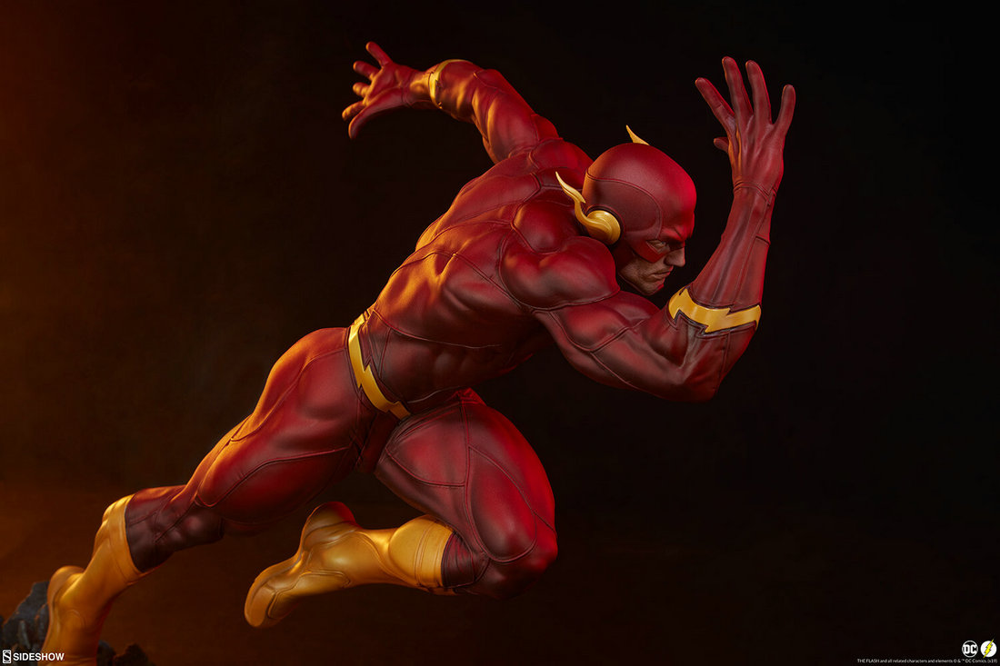

THE FLASH Flash (Bartholomew Henry "Barry" Allen) is a fictional superhero appearing in American comic books published by DC Comics.Because he is a speedster, his power consists mainly of superhuman speed. Various other effects are also attributed to his ability to control the speed of molecular vibrations, including his ability to vibrate at speed to pass through objects. The Flash wears a distinct red and gold costume treated to resist friction and wind resistance, traditionally storing the costume compressed inside a ring.